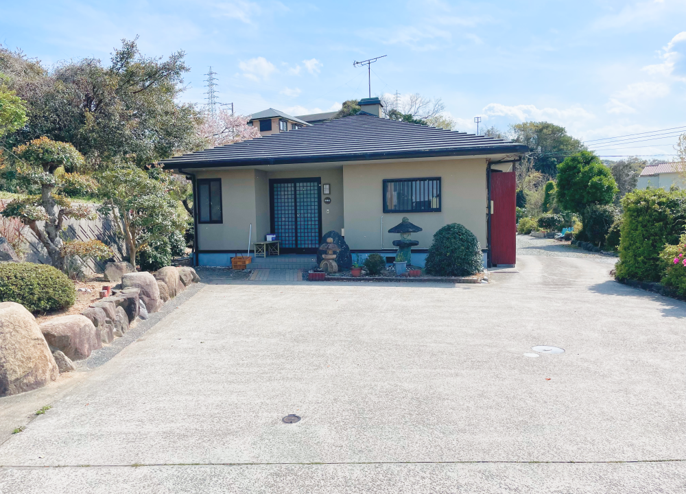

はじめに
淡路島の富島にある一人のおばあちゃんが営む民宿。
淡路島は時間の流れが緩やかですが、清雅荘のある富島は格別時間の流れが緩やかです。
清雅荘では素泊まりのみのご宿泊ですが、だからこそゆっくりと寛ぐことができます。
都会の喧騒から離れた、淡路島の穏やかな時間をお楽しみください。
客室
客室は６畳一間が5部屋あります。
人数によってお部屋同士を連結させてご利用いただけます。
また、お仕事での長期滞在なども承っておりますのでお気軽に
ご連絡ください。
施設
会話を楽しめるリビングがあります。
各部屋で宿泊される小団体の方もここで集まることができます。
その他に浴場が一つとトイレが２つあり、共同でご利用いただいています。
周辺のお店
地元に愛されてきた飲食店が数軒あります。
淡路島の魚を使った昔ながらのお寿司屋さんや、淡路島牛丼がおいしい中華料理屋さん。
また、お車で10分〜15分ほどの所に人気の観光スポットが数多くあります。
画像待ち
画像待ち
周辺の観光
北淡震災記念公園
清雅荘から歩いて１０分圏内に、北淡震災記念公園があります。
ここでは阪神淡路大震災によってできた断層や、当時の貴重な写真などをご覧いただけます。
また、お土産コーナーやソフトクリームが食べられる売店もあります。
昼下がりのちょっとした散歩にとてもいいですよ。
画像待ち
北淡県民サンビーチ
清雅荘から歩いて１０分圏内に海水浴場があります。
洗濯機や浴場もございますので、夏は海で泳いだ後に宿でゆっくり休むことができます。
画像待ち
来館方法
お車でお越しの場合
北淡ICを降りて右に曲がり、最初の信号を右に曲がって道なりに１０分です。
ご予約時に車で来館の旨をお伝えください。
公共交通機関でお越しの場合
三宮バスターミナルより北淡IC行きに乗車。
[富島東]で降車して歩いて5分です。
ご予約
清雅荘では、お電話でのご予約のみ承っております。
一人で経営しておりますため、タイミングによっては
電話に出れない場合がございますこと、あらかじめご了承くださいませ。
お手数ではございますが、繋がらない場合は時間を置いて
改めてお問合せをお願い申し上げます。
TEL 0799-82-0001
朝9時～夜19時
定休日 不定休
ご予約時は下記３点も併せてお伝えください。
①お名前
②電話番号
③チェックイン時間